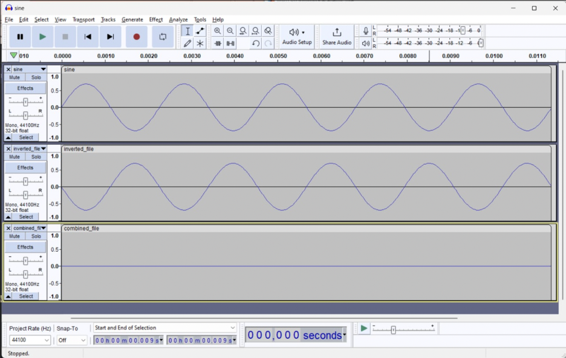
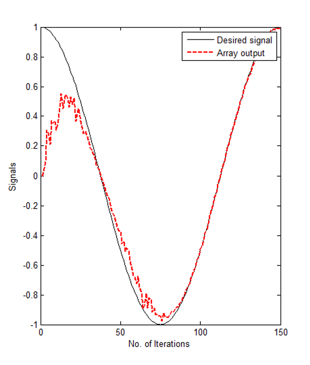
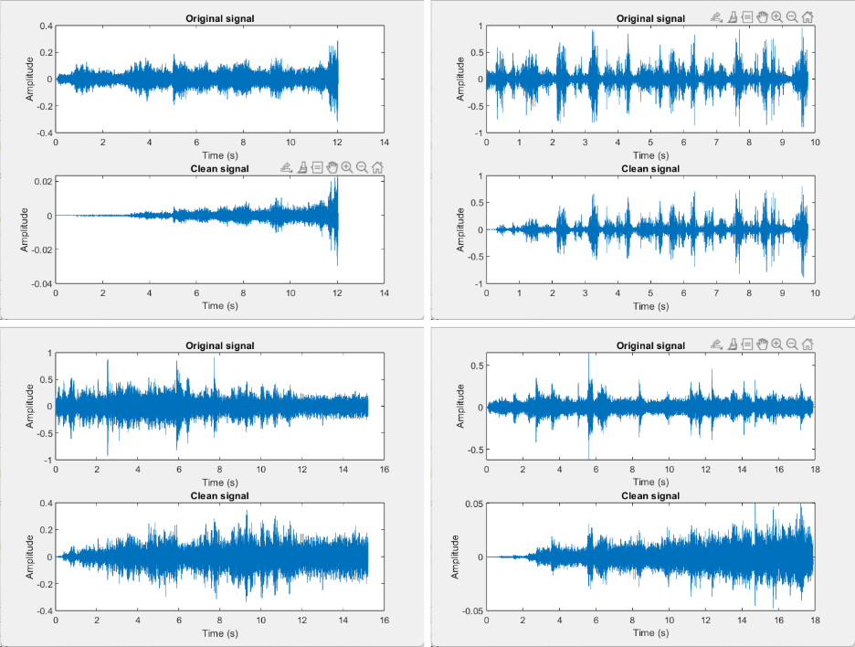

(02)
Noise Reduction
Implementing an adaptive LMS filter in MATLAB to reduce background noise in real-world audio while preserving important signals.
Overview
For this numerical analysis project, my team developed an adaptive noise-reduction algorithm using real-world audio recordings collected across Carnegie Mellon University's campus. Our goal was to reduce background noise while preserving important sounds, including emergency signals.
We implemented and evaluated a Least Mean Squares (LMS) adaptive filter in MATLAB, using recorded audio to assess how effectively the algorithm could distinguish unwanted background noise from the desired signal.
Algorithm Selection
We initially investigated destructive interference, a common approach to active noise cancellation. We created a MATLAB model demonstrating how two equal-amplitude signals with opposite phase could theoretically cancel one another.
While this approach can effectively cancel a known noise signal, it is less practical for changing real-world environments and can unintentionally suppress sounds that should remain audible. We therefore selected the Least Mean Squares (LMS) algorithm, which adapts its filter coefficients based on the incoming signal.

The LMS filter iteratively updates its coefficients to minimize the error between the filtered output and the desired reference signal. This allows the filter to continuously adapt as the characteristics of the noise change.

MATLAB Implementation
We implemented the signal-processing pipeline in MATLAB. The program converts recorded audio to a single-channel signal, generates a representative noise signal, and applies the LMS filter to produce a cleaned output.
The implementation allows the filter length and step size to be varied, providing control over the tradeoff between convergence speed, stability, and filtering performance. The program also generates plots comparing the original and filtered signals and allows the resulting audio to be evaluated by listening to the recordings.
Real-World Testing
To evaluate the algorithm under realistic conditions, we collected audio samples from several high-traffic locations on campus, including the gym, buses, lawn, and study areas.
We processed these recordings through the MATLAB implementation and compared the original and filtered signals both visually and audibly. We used the change in signal amplitude as a quantitative measure of noise reduction while listening to the output to verify that important sounds remained perceptible.

Results
The LMS implementation reduced measured noise amplitude by up to 95% while preserving emergency signals in the tested recordings.
This project gave me experience translating a mathematical algorithm into working MATLAB code and evaluating its performance using real-world data. It also strengthened my understanding of numerical methods, adaptive filtering, and signal-processing techniques.